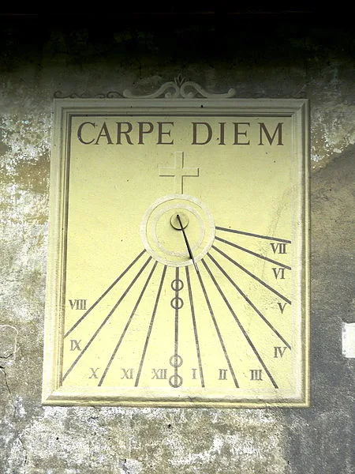
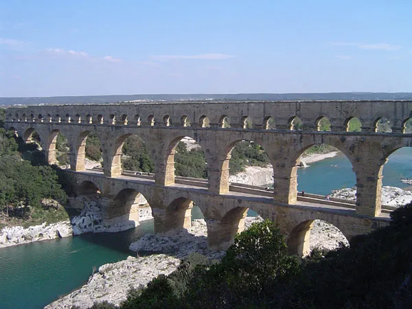
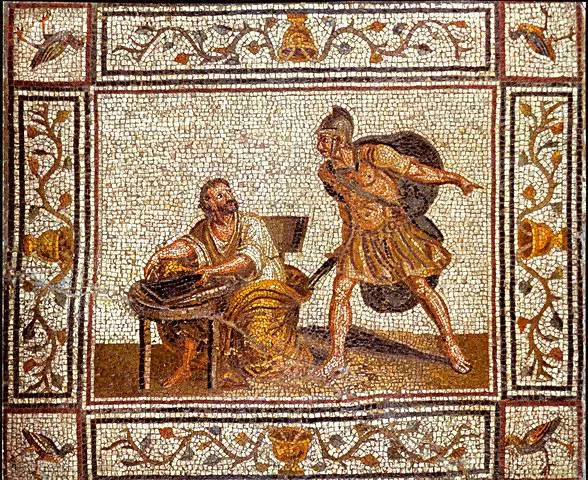
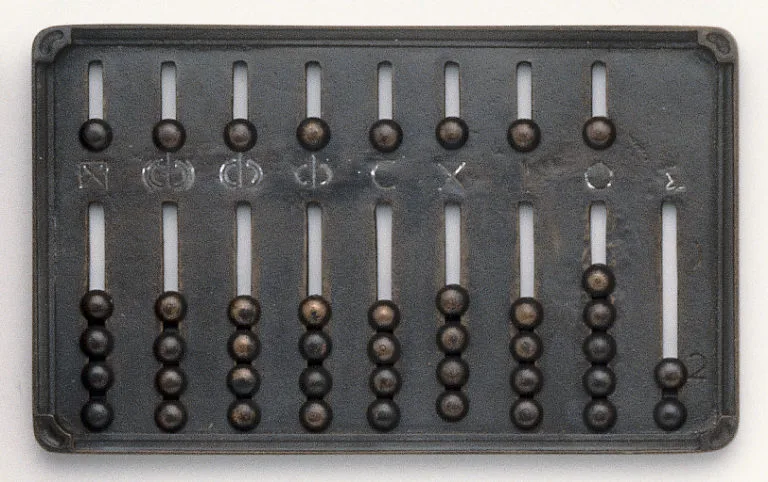
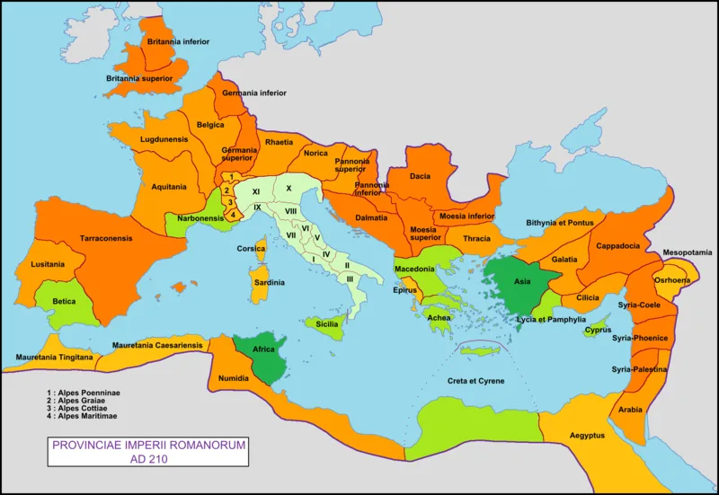
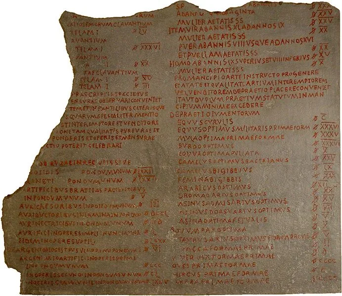
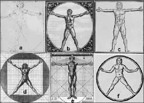
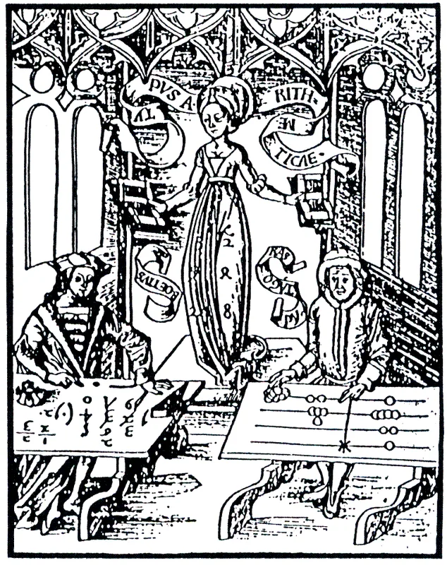

Segundo Miguel Gil (s.d.), o calendário anterior tinha 355 dias e recebia um mês intercalado em anos alternos; Sosígenes recomendou 365 dias e um dia extra a cada quarto ano. Segundo Castellanos Suárez et al. (2023), o calendário juliano passou a valer em 45 a.C. e mostra a matemática a serviço da organização do tempo e das cerimônias.

FONTE: CARESSA (2012) — relógio de sol romano, imagem extraída do PDF do artigo.
Segundo Caressa (2012), o cálculo era importante na vida pública e havia funcionários especializados: numerarii, tabularii, rationales, scribae, calculatores e geometrae. Segundo Silva e Mendes (2013), a geometria era valorizada por seu uso na construção civil, enquanto a matemática especulativa era olhada com desconfiança.

FONTE: CARESSA (2012) — aqueduto romano (Pont du Gard), imagem extraída do PDF do artigo.
Segundo Miguel Gil (s.d.), Heron (c. 65–125 d.C.) trabalhou com áreas, volumes, óptica e mecânica aplicada; sua fórmula para a área do triângulo e seus métodos para escavar túneis mostram o caráter concreto de sua obra. Segundo Caressa (2012), ele foi um dos estudiosos que puderam investigar dentro do Império.

FONTE: CARESSA (2012) — mosaico romano com matemáticos, imagem extraída do PDF do artigo.
Segundo Núñez (2003), calculus quer dizer "pedrinha" e daí veio o verbo calcular; os ábacos podiam ser pranchas com linhas ou pequenos aparelhos de metal. Segundo Sanchez (2020), contar nos dedos era esperado de quem tinha educação. Segundo Ibiapina (2021), a ausência de fichas numa coluna já representava o zero.

FONTE: CARESSA (2012) — ábaco romano de metal, imagem extraída do PDF do artigo.
Segundo Miguel Gil (s.d.), Ptolomeu (85–165 d.C.) reuniu tabelas de cordas e consolidou a trigonometria em sua Sintaxis Matemática. Segundo Caressa (2012), ele usou a rede viária do Império para escrever a Geografia — um exemplo de como a infraestrutura romana serviu também à ciência.

FONTE: CARESSA (2012) — mapa das províncias romanas (AD 210), imagem extraída do PDF do artigo.
Segundo Miguel Gil (s.d.), Diofanto foi uma das últimas grandes contribuições da tradição helenística. Segundo Caressa (2012), a afirmação de que ele teria "inventado a álgebra" é um lugar-comum que precisa ser examinado, não repetido sem crítica.

FONTE: CARESSA (2012) — fragmento de papiro com texto matemático, imagem extraída do PDF do artigo.
Segundo Miguel Gil (s.d.), Hipátia, filha de Teon, foi matemática de destaque em Alexandria e sua morte violenta nas ruas da cidade simbolizou o fim da era greco-alexandrina. Segundo Caressa (2012), matemáticos "gregos" dos primeiros séculos cristãos ainda viviam e trabalhavam dentro do Império.

FONTE: CASTELLANOS SUÁREZ et al. (2023) — versões do homem de Vitrúvio, imagem extraída do PDF do artigo.
Segundo Silva e Mendes (2013), a queda do Império do Ocidente abre a Idade Média, quando mosteiros e compilações latinas guardam parte da herança grega. Segundo Miguel Gil (s.d.), o Império do Oriente preservou as obras gregas por muito mais tempo.

FONTE: NÚÑEZ (2003) — gravura de calculadores medievais, imagem extraída do PDF do artigo.
FONTE: NÚÑEZ (2003) — medalhão com um calculador romano, imagem extraída do PDF do artigo.